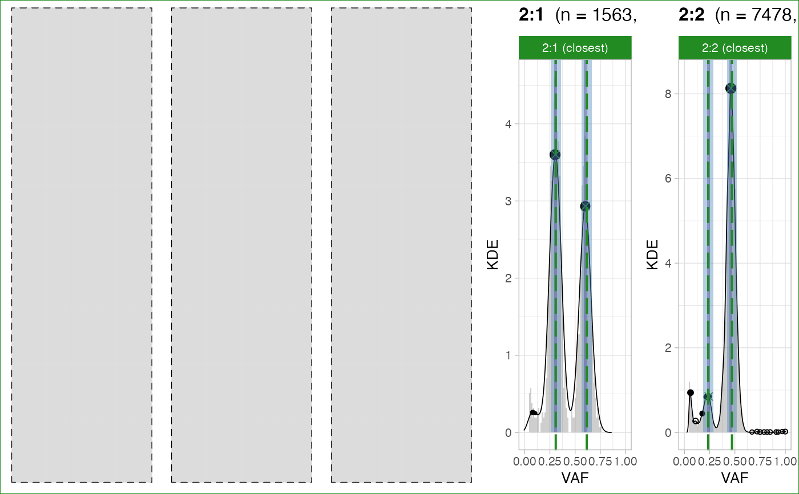

Results from analyze_peaks can be visualised with this
function, specifying what type of segment one wishes to plot.
* Simple clonal CNAs. Gray panels are placeholders for segments among `1:0`, `2:0`, `1:1`, `2:1`, and `2:2` that are available for the sample. Each vertical dashed line is an expected peak, the bandwidth around being the tolerance we use to match peaks (based on purity_error, adjusted for segment ploidy and tumour purity). Each dot is a peak detected from data, with a bandwidth of tolerance (fixed) around it. Note that: i) a green peak is matched, a red one is mismatched; ii) the overall segment QC is given by the colour of the facet; iii) the overall sample QC is given by the box surrounding the whole figure assembly and iv) options of function `plot_peaks_analysis` allow to separate the plots.
* Complex clonal CNAs. The plot is similar to the one for simple segments, but no segment-level or sample-level scores are produced.
* Subclonal simple CNAs. The layout of this plot is the same of complex clonal CNAs; not that the facet reports the distinct evolutionary models that have been generated to QC subclonal CNAs. The model in CNAqc ranks the proposed evolutionary alternatives (linear versus branching) based on the number of matched peaks. A subclonal segment with many matched peaks is likely to be correct.
plot_peaks_analysis(
x,
empty_plot = TRUE,
assembly_plot = TRUE,
what = "simple"
)A CNAqc object.
For simple clonal CNAs, if data for one karyotype is missing an empty plot is returned. Otherwise the plot is not returned (NULL is forwarded).
For simple clonal CNAs, if TRUE, a unique figure is
returned with all the plots assembled. Otherwise a list of plot is returned.
What analysis should be plot:
- Value `common` or `simple` refers to clonal karyotypes used for sample-level QC. - `general` or `complex` for all the others. - `subclonal` is for subclonal segments.
A single ggpubr figure or a list of `ggplot2` figures.
data('example_dataset_CNAqc', package = 'CNAqc')
x = init(mutations = example_dataset_CNAqc$mutations, cna = example_dataset_CNAqc$cna, purity = example_dataset_CNAqc$purity)
#>
#> ── CNAqc - CNA Quality Check ───────────────────────────────────────────────────
#>
#> ℹ Using reference genome coordinates for: GRCh38.
#> ℹ Drivers are annotated, but 'gene' column is missing, using mutation location.
#> ✔ Fortified calls for 12963 somatic mutations: 12963 SNVs (100%) and 0 indels.
#> ! CNAs have no CCF, assuming clonal CNAs (CCF = 1).
#> ✔ Fortified CNAs for 267 segments: 267 clonal and 0 subclonal.
#> ✔ 12963 mutations mapped to clonal CNAs.
# Analyse first, then plot
x = analyze_peaks(x)
#>
#> ── Peak analysis: simple CNAs ──────────────────────────────────────────────────
#>
#> ℹ Analysing 9041 mutations mapping to karyotype(s) 2:2 and 2:1.
#> ℹ Mixed type peak detection for karyotype 2:1 (1563 mutations)
#> ℹ Mixed type peak detection for karyotype 2:2 (7478 mutations)
#> # A tibble: 4 × 16
#> # Rowwise:
#> mutation_mu…¹ karyo…² peak delta…³ x y count…⁴ disca…⁵ from offset…⁶
#> <dbl> <chr> <dbl> <dbl> <dbl> <dbl> <int> <lgl> <chr> <dbl>
#> 1 1 2:2 0.235 0.00700 0.24 0.86 65 FALSE KDE -4.55e-3
#> 2 2 2:2 0.471 0.0140 0.461 8.14 625 FALSE BMix 1.02e-2
#> 3 1 2:1 0.308 0.0120 0.307 3.60 59 FALSE BMix 6.56e-4
#> 4 2 2:1 0.616 0.0239 0.602 2.94 60 FALSE BMix 1.38e-2
#> # … with 6 more variables: offset <dbl>, weight <dbl>, epsilon <dbl>,
#> # VAF_tolerance <dbl>, matched <lgl>, QC <chr>, and abbreviated variable
#> # names ¹mutation_multiplicity, ²karyotype, ³delta_vaf, ⁴counts_per_bin,
#> # ⁵discarded, ⁶offset_VAF
#> Error in green("PASS"): could not find function "green"
plot_peaks_analysis(x)
#> Warning: Input does not have peaks, see ?peaks_analysis to run peaks analysis.
